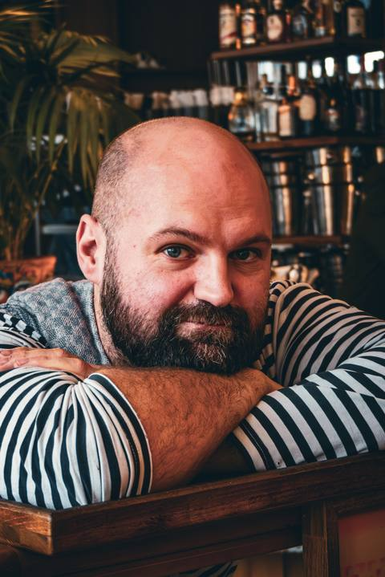
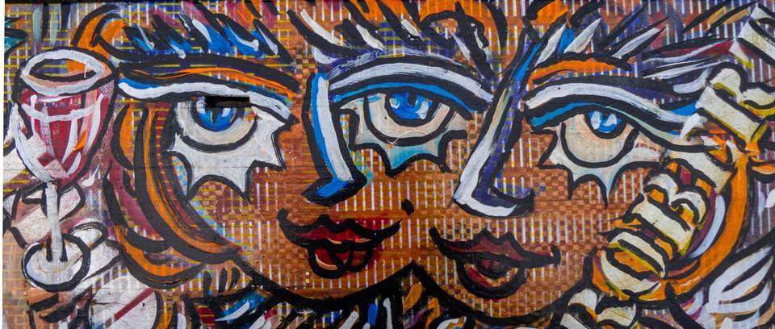
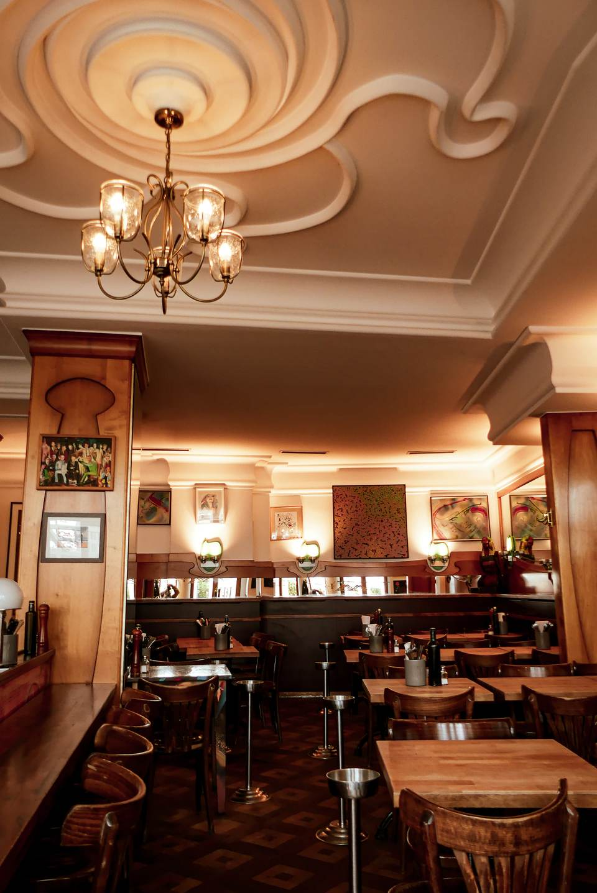
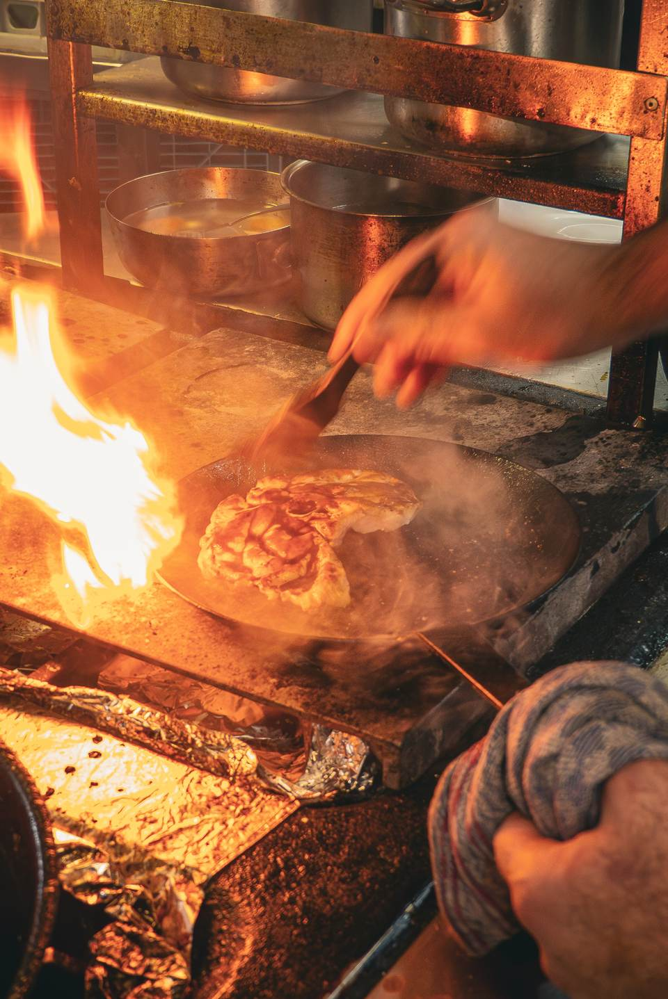
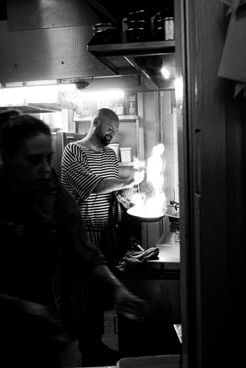
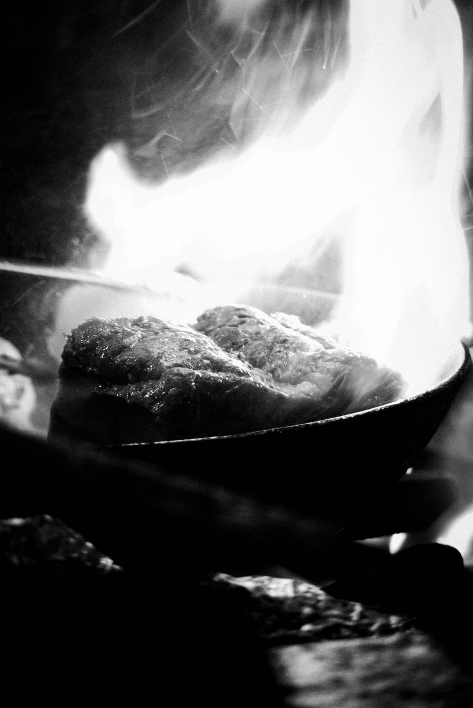
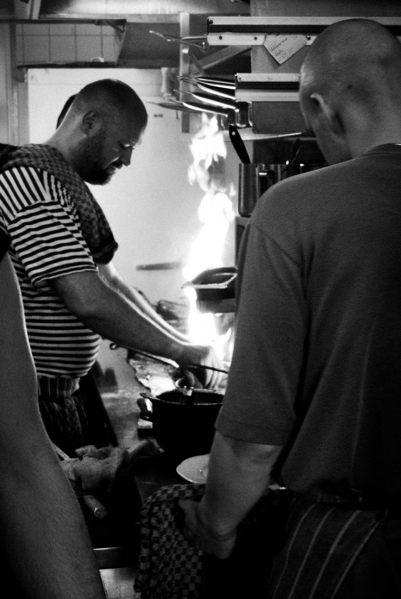
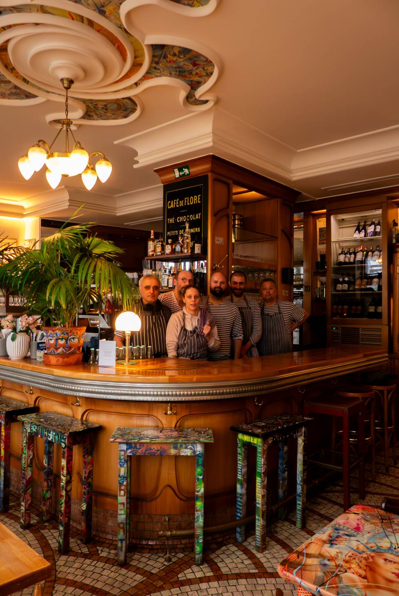
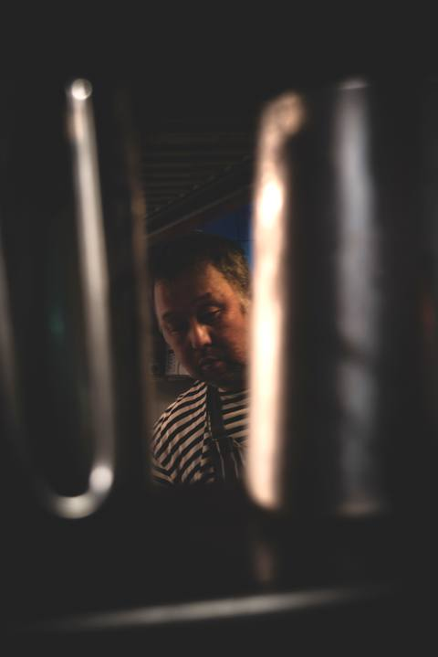

Michael Geisner
Patron & chef de cuisine
Formé notamment en France et au Portugal. Il y a des années, une première cuisine partagée avec Robert – depuis, la cuisine française ne le lâche plus.
Brasserie · Düsseldorf, au bord du Rhin

Cuisine française au bord du Rhin. Sans réservation, sans chichi.
Du mercredi au samedi de 12 h à 23 hDimanche dès 12 hRathausufer 10 · 0211 152 078 34 Cuisine jusqu'à 21 h 30 · le dimanche jusqu'à 17 h 30
La Maison
Le ROBERT. est une brasserie sur le Rathausufer – à quelques pas de l'eau, en pleine vieille ville. À l'intérieur : moulures au plafond, lumière chaude, tables pleines. Dehors, le Rhin passe.
Ici, la table est à ceux qui poussent la porte. On ne réserve pas – mais une place finit toujours par se libérer. Ça a toujours été comme ça, et ce n'est pas près de changer.



La Cuisine
Aux fourneaux, Michael Geisner – patron, chef de cuisine, Micha pour tout le monde ici. Sa cuisine est française : soupe à l'oignon, huîtres de Normandie, confit de canard, crème brûlée. Beaucoup au feu ouvert, parfois à l'improviste, selon ce que donne le marché.
L'esprit est français, sans être figé : quand c'est bon, de saison, ou que ça mérite sa place sur la carte, une assiette qui ne vient pas de France a aussi le droit d'y passer – des Maultaschen souabes, par exemple, ou un fish & chips.
Alors non, la carte ne dit pas tout. Et tout ce qu'elle dit n'est pas là tous les jours. Demandez-nous – le meilleur, parfois, n'est écrit nulle part.
La Carte
La carte est un instantané. Elle change avec les saisons, le marché – et parfois avec l'humeur de Micha.
Sacrée petite soupe de homard8
au cognac
Petite soupe à l'oignon gratinée10
chaude, bien gratinée, irrésistible
Grande soupe à l'oignon gratinée15
chaude, bien gratinée, irrésistible
La petite bouillabaisse de Robert18
aïoli, gruyère & croûtons
La bouillabaisse de Robert27,50
aïoli, gruyère & croûtons
6 huîtres fines de claire26
de Normandie
2 huîtres fines de claire12
gratinées à la Rockefeller
8 bulots14,50
aïoli et pain noir
Crevettes roses16,50
mayonnaise et petite salade
Tourteau de Bretagne20
mayonnaise maison
Plateau fruits de mer34
3 huîtres, crevettes roses, bulots et tourteau
Petite marmite de moules14
bouillon coco-curry, légumes croquants au wok
Croquettes de Belgique17
poulpe, gruyère, salade, crevettes grises de Büsum, sauce cocktail
Salade de raie17
hop, dans l'avocat – salade et câpres
Carpaccio de saumon mariné18,50
coquilles Saint-Jacques, petite salade, sauce à l'estragon
Poulpe grillé18,50
salade fraîche orange-fenouil, avocat
Tataki de thon au sésame19
salade topinambour-carotte, sauce teriyaki
Vitello tonnato17
fines tranches de veau, sauce au thon, câpres
Chèvre gratiné14,50
sirop d'érable, salade d'orge perlé, vinaigrette au curcuma
Steak américain de veau16,50
cru, préparé comme en Belgique, frites et cornichons
Salade landaise28
magret, gésiers, confit, lardons
Terrine tiède de saumon sauvage (Label Rouge)19
raifort aux airelles, frisée
Terrine de tête de veau15
servie tiède, câpres et sauce gribiche
Pâté de foie de veau, fait avec amour14
noix, cornichons, salade aux lardons
Noix de ris de veau, juste poêlées18
salade aux noix, vinaigrette bien relevée
Os à moelle gratiné17
champignons des bois, jus corsé
Gésiers de canard confits15,50
lentilles beluga, salade mêlée & lardons
Chou frisé gratiné16
champignons des bois à la crème, paille de céleri, parmesan et truffe
Knöpfli au fromage de montagne et au safran, « style alpin »18,50
faits main, oignons fondants, salade
Taglierini, vongole & moules28
sauce homard, langoustine et gambas rouge
Taglierini aux champignons à la crème18
et légumes
Taglierini au saumon mariné maison18
et légumes
Tarte flambée au chèvre15
oignons et prunes
Tarte flambée au saumon mariné15
et légumes
Confit de canard36,50
purée de pommes de terre, chou rouge, marrons et jus
Foie de veau « à la berlinoise »21
purée au beurre, pommes au calvados, oignons
Chou kale à la westphalienne20
pommes de terre, légumes racines, Mettwurst et lardons
Maultaschen faites main18,50
sautées au beurre, champignons, purée de céleri
Trois suprêmes de caille poêlés24
salsifis et purée
La marmite de moules classique de Robert28
fumet de poisson, légumes racines parfumés & frites
Cordon bleu de veau36
gruyère truffé, épinards, gratin & beurre café de Paris
Lotte au poivre30
poêlée de champignons, purée, beurre blanc au citron
Cabillaud poêlé28
chou pointu à la moutarde, purée au beurre
Noix de Saint-Jacques28
épinards à la crème, écrasé de pommes de terre, sauce homard
Saumon en croûte d'herbes27,50
risotto au chou frisé, légumes, beurre blanc au citron
Calamars poêlés23
purée de haricots noirs relevée, épinards
Fish & chips de sébaste24
comme à Brighton : frites, sauce HP, salade de concombre
Travers de porc cuits douze heures21
sensationnels – coleslaw et frites
Poitrine de porc glacée19
coquille Saint-Jacques, gambas, purée de haricots noirs, salade
Joues de veau à la René24
braisées au madère, salade de pommes de terre tiède
Tafelspitz de veau19
dans son bouillon, compote de pommes, purée et chou frisé à la crème
Gigot d'agneau à la provençale20
herbes, flageolets, épinards et gratin
Carré ibérique au cumin25,50
gratin au fromage de montagne, chou pointu à la moutarde, jus
Entrecôte d'Argentine36,50
os à moelle rôti, flageolets, épinards, gratin et jus
Magret de canard « tradition »23
écrasé de chou rouge, sauce nougat relevée
Suprême de poulet Kikok18,50
sirop d'érable, abricots, aligot – purée au fromage bien réconfortante
La currywurst « Rêve » de René15
frites et salade de concombre
Tarte aux pommes à la française8,50
glace vanille et fruits rouges
Mousse au chocolat6
sauce caramel
Le plus fin petit pot de vanille de France7,50
caramélisé
Rêve de framboises8,50
glace vanille & crème pâtissière gratinée
Le tiramisu de Yuki, miam miam8,50
glace mandarine
Sorbet pamplemousse-campari10,50
généreusement arrosé de crémant
Parfait aux fruits de la passion7,50
fruits rouges et coulis de fraise
Moelleux au chocolat tiède8,50
glace vanille et fruits rouges
Prix en euros. Chaque plat tant qu'il y en a dans la marmite. Allergies ? Demandez – on sait ce qu'il y a dedans.

En Images

L’Histoire
Le point dans le nom n'est pas une faute de frappe.
Robert Hülsmann a cuisiné pendant plus de cinquante ans – aux quatre coins du monde, dans les cuisines de Düsseldorf, toujours avec beaucoup de cœur. La cuisine de brasserie était son grand amour, et ce restaurant, son dernier projet. Le point après le nom, c'était sa manière de dire : ça y est, c'est ici.
« Ici, c'est encore le patron qui cuisine. »
Robert s'est éteint en mai 2021. Son nom est resté sur la porte, ses recettes en cuisine. Aujourd'hui, c'est Micha qui fait vivre la maison – il cuisinait déjà aux côtés de Robert, et avec son équipe il cuisine, chaque jour, de façon à ce que Robert n'y trouve rien à redire.
L’Équipe


Patron & chef de cuisine
Formé notamment en France et au Portugal. Il y a des années, une première cuisine partagée avec Robert – depuis, la cuisine française ne le lâche plus.
Cuisinier
Fait chauffer les poêles dès les premières heures – il était déjà là dans les cuisines de Robert, à l'époque.

Cuisinier
Notre homme du garde-manger, perfectionniste assumé. Avant ça : près de vingt ans dans la même maison.
On En Parle
Quand la fermeture menaçait, fin 2025, la vague de soutien a été immense – aujourd'hui, c'est acquis : le ROBERT. continue. Et il figure de toute façon régulièrement dans les bonnes adresses de la ville. Articles en allemand.
En Ce Moment
La carte bouge, la journée aussi. Ce que Micha cuisine, ce qui arrive de frais, ce qui se passe dans la maison – on le montre sur Instagram, entre deux services.
Suivez-nous sur Instagram. Plats du jour, coups d'œil en cuisine, un peu du quotidien de ROBERT.
Nous Trouver
Passez, tout simplement. On ne prend pas de réservations – premier arrivé, premier assis. Si c'est plein, le mieux, c'est d'attendre au bar, un verre à la main.
Rathausufer 10
40213 Düsseldorf
Voir l'itinéraire.